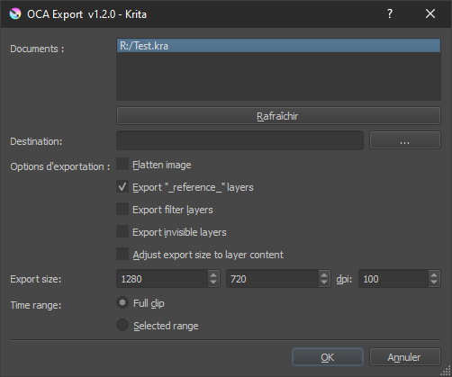

OCA for Krita
OCA, the Open Cel Animation format is an open format to ease the exchange of traditionnal/frame-by-frame/cel animation between different applications.
It is able to export all animation keyframes from a Krita document, keeping the layer structure, blending modes, and a lot of other information. This OCA format can then be imported in another application like Adobe After Effects or Blender.
The documentation about OCA is available on oca-docs.rainboxlab.org.
This is the OCA exporter for Krita.

Features
This OCA exporter will export the most common features of all drawing/animation software:
- Exports the layers or the flattened image
- Layer Groups (and pass through mode if any)
- Layer Labels
- Layer Visibility
- Keyframes and their duration (animation exposure)
- Opacity Keyframes
- Blending Modes (see this table for a list)
- Layer Sizes and Coordinates
- Document background color
- Document color depth
How to install OCA for Krita
This plugin is installed the same way as other Krita plugins.
Using the plugin importer
- Open the Script Importer plugin in Krita via
Tools ‣ Scripts ‣ Import Python Plugin... - Locate and import the OCA.zip file you’ve downloaded.
- Restart Krita
- Go to
Settings ‣ Configure Krita... - In the
Python Plugin Managertab, enable the OCA plugin - Restart Krita
Manually
- Copy (or symlink if you’re developping) both the OCA.desktop file and the OCA folder to the pykrita subfolder of the Krita resources folder.
- Start Krita
- Go to
Settings ‣ Configure Krita... - In the
Python Plugin Managertab, enable the OCA plugin - Restart Krita
Note
To find your resources folder, start Krita and click the Settings ‣ Manage Resources… menu item. This will open a dialog box. Click the Open Resources Folder button.
License
Software
Copyright (C) 2020 Nicolas Dufresne and Contributors.
This program is free software; you can redistribute them and/or modify them under the terms of the GNU General Public License as published by the Free Software Foundation; either version 3 of the License, or (at your option) any later version.
This program is distributed in the hope that it will be useful, but WITHOUT ANY WARRANTY; without even the implied warranty of MERCHANTABILITY or FITNESS FOR A PARTICULAR PURPOSE. See the GNU General Public License for more details.
You should have received a copy of the GNU General Public License along with DuBuilder. If not, see http://www.gnu.org/licenses/.
This Documentation
Copyright (C) 2020 Nicolas Dufresne and Contributors.
Permission is granted to copy, distribute and/or modify this document under the terms of the GNU Free Documentation License, Version 1.3 or any later version published by the Free Software Foundation;
with no Invariant Sections, no Front-Cover Texts, and no Back-Cover Texts.
A copy of the license is included in the section entitled “Documentation License”.